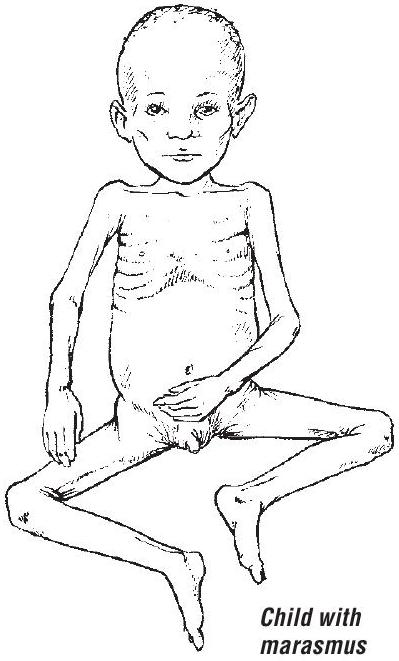

CHAPTER 7
Severe acute malnutrition
7.1 Severe acute malnutrition
Severe acute malnutrition is defined in these guidelines as the presence of oedema of both feet or severe wasting (weight-for-height/length <-3SD or midupper arm circumference <115 mm). No distinction is made between the clinical conditions of kwashiorkor or severe wasting because their treatment is similar.
Children who are <-3SD weight-for-age may be stunted (short stature) but not severely wasted. Stunted children who are not severely wasted do not require hospital admission unless they have a serious illness.
Diagnosis
The main diagnostic features are:
- weight-for-length/height <-3SD (wasted) (see p. 386) or
- mid-upper arm circumference <115 mm or
- oedema of both feet (kwashiorkor with or without severe wasting).
Children with severe acute malnutrition should first be assessed with a full clinical examination to confirm whether they have any general danger sign, medical complications and an appetite.
Children with severe acute malnutrition with loss of appetite or any medical complication have complicated severe acute malnutrition and should be admitted for inpatient care. Children who have a good appetite and no medical complications can be managed as outpatients.
7.2 Initial assessment
Assess for general danger signs or emergency signs and take a history concerning:
- recent intake of food and fluids
- usual diet before the current illness
- breastfeeding
- duration and frequency of diarrhoea and vomiting
On examination, look for:
- shock: lethargic or unconscious; with cold hands, slow capillary refill (> 3 s ), or weak (low volume), rapid pulse and low blood pressure
- signs of dehydration
- severe palmar pallor
- bilateral pitting oedema
- eye signs of vitamin A deficiency:
- dry conjunctiva or cornea, Bitot spots
- corneal ulceration
- keratomalacia
Children with vitamin A deficiency are likely to be photophobic and will keep their eyes closed. It is important to examine the eyes very gently to prevent corneal rupture.
- localizing signs of infection, including ear and throat infections, skin infection or pneumonia
- signs of HIV infection (see Chapter 8, p. 225)
- fever (temperature $\geq 37.5^{\circ} \mathrm{C}$ or $\geq 99.5^{\circ} \mathrm{F}$ ) or hypothermia (rectal temperature $<35.5^{\circ} \mathrm{C}$ or $<95.9^{\circ} \mathrm{F}$ )
- mouth ulcers
- skin changes of kwashiorkor:
- hypo- or hyperpigmentation
- desquamation
- ulceration (spreading over limbs, thighs, genitalia, groin and behind the ears)
- exudative lesions (resembling severe burns) often with secondary infection (including Candida).
- Conduct an appetite test:
- Check if the child has appetite by providing ready-to-use therapeutic food.
Laboratory investigations should be conducted for Hb or EVF, especially if there is severe palmar pallor.
7.3 Organization of care
Children who have an appetite (pass the appetite test) and are clinically well and alert should be treated as outpatients for uncomplicated severe acute malnutrition. Children who have severe oedema +++ or a poor appetite (fail the appetite test) or present with one or more general danger signs or medical conditions requiring admission should be treated as inpatients.
On admission, a child with complicated severe acute malnutrition should be separated from infectious children and kept in a warm area ( $25-30^{\circ} \mathrm{C}$, with no draughts) or in a special nutrition unit if available, and constantly monitored.
Facilities and sufficient staff should be available to ensure correct preparation of appropriate therapeutic foods and to feed the child regularly, day and night. Accurate weighing machines or MUAC tapes are needed, and records of the feeds given and the child's weight or anthropometric measurements should be kept so that progress can be monitored.
7.4 General management
Plan for inpatient care
For triage assessment of children with severe acute malnutrition and management of shock, see Chapter 1, pp. 3, 14 and 19. When there is corneal ulceration, give vitamin A, instil chloramphenicol or tetracycline and atropine drops into the eye, cover with a saline-soaked eye pad, and bandage (see section 7.5.1, p. 217). Severe anaemia, if present, will require urgent treatment (see section 7.5.2, p. 218).
General treatment involves 10 steps in two phases: initial stabilization and rehabilitation (see Table 21).
| Stabilization | Rehabilitation | ||
|---|---|---|---|
| Days 1-2 | Days 3-7 | Weeks 2-6 | |
| 1. Hypoglycaemia | ✓ | ||
| 2. Hypothermia | ✓ | ||
| 3. Dehydration | ✓ | ||
| 4. Electrolytes | ✓ | ||
| 5. Infection | ✓ | ||
| 6. Micronutrients | ✓ (no iron) | ✓ (with iron) | |
| 7. Initiate feeding | ✓ | ||
| 8. Catch-up feeding | ✓ | ||
| 9. Sensory stimulation | ✓ | ||
| 10. Prepare for follow-up | ✓ | ||
7.4.1 Hypoglycaemia
All severely malnourished children are at risk of hypoglycaemia and, immediately on admission, should be given a feed or 10% glucose or sucrose (see below). Frequent 2 h feeding is important.
Diagnosis
If there is any suspicion of hypoglycaemia and when blood glucose can be measured quickly (e.g. with Dextrostix®), this should be done immediately. Hypoglycaemia is present when the blood glucose is <3 mmol/litre (<54 mg/dl). If blood glucose cannot be measured, it should be assumed that all children with severe acute malnutrition are hypoglycaemic and given treatment.
Treatment
Give 50 ml of 10% glucose or sucrose solution (one rounded teaspoon of sugar in three tablespoons of water) orally or by nasogastric tube, followed by the first feed as soon as possible.
Give the first feed of F-75 therapeutic milk, if it is quickly available, and then continue with feeds every 2 h for 24 h ; then continue feeds every 2 or 3 h , day and night.
If the child is unconscious, treat with IV 10% glucose at 5 ml/kg or, if IV access cannot be quickly established, then give 10% glucose or sucrose solution by nasogastric tube (see p. 345). If IV glucose is not available, give one teaspoon of sugar moistened with one or two drops of water sublingually, and repeat every 20 min to prevent relapse. Children should be monitored for early swallowing, which leads to delayed absorption; in this case another dose of sugar should be given. Continue with 2 h oral or nasogastric feeds to prevent recurrence.
- Start on appropriate IV or IM antibiotics (see p. 207).
Monitoring
If the initial blood glucose was low, repeat the measurement (using finger or heel prick blood and measure with the Dextrostix®, when available) after 30 min .
- If blood glucose falls to <3 mmol/litre (<54 mg/dl), repeat the 10% glucose or oral sugar solution.
- If the rectal temperature falls to <35.5°C, or if the level of consciousness deteriorates, repeat the Dextrostix® measurement and treat accordingly.
Prevention
- Feed every 2 h, starting immediately (see initial refeeding, p. 209) or, when dehydrated, rehydrate first. Continue feeding throughout the night.
- Encourage mothers to watch for any deterioration, help feed and keep the child warm.
- Check on abdominal distension.
7.4.2 Hypothermia
Hypothermia is very common in malnourished children and often indicates coexisting hypoglycaemia or serious infection.
Diagnosis
If the axillary temperature is <35°C (<95°F) or does not register on a normal thermometer, assume hypothermia. When a low-reading thermometer is available, take the rectal temperature (<35.5°C or <95.9°F) to confirm hypothermia.
Treatment
All children with hypothermia should be treated routinely for hypoglycaemia and infection.
- Feed the child immediately and then every 2 h unless they have abdominal distension; if dehydrated, rehydrate first.
- Re-warm the child: Make sure the child is clothed (especially the head); cover with a warmed blanket and place a heater (not pointing directly at the child) or lamp nearby, or put the child on the mother's bare chest or abdomen (skin-to-skin) and cover them with a warmed blanket and/or warm clothing.
- Keep the child away from draughts.
- Give appropriate IV or IM antibiotics (see p. 207).
Monitoring
- Take the child's rectal temperature every 2 h until it rises to >36.5°C. Take it every 30 min if a heater is being used.
- Ensure that the child is covered at all times, especially at night. Keep the head covered, preferably with a warm bonnet, to reduce heat loss.
- Check for hypoglycaemia whenever hypothermia is found.
Prevention
- Feed immediately and then every 2-3 h, day and night.
- Place the bed in a warm, draught-free part of the ward, and keep the child covered.
- Use the Kangaroo technique for infants (see p. 59), cover with a blanket and let the mother sleep with child to keep the child warm.
- Avoid exposing the child to cold (e.g. after bathing or during medical examinations).
- Change wet nappies, clothes and bedding to keep the child and the bed dry. Dry carefully after bathing, but do not bathe if very ill.
- Use a heater or incandescent lamp with caution.
- Do not use a hot water bottle or fluorescent lamp.
7.4.3 Dehydration
Diagnosis
Dehydration tends to be overdiagnosed and its severity overestimated in children with severe acute malnutrition because it is difficult to determine dehydration accurately from clinical signs alone. Assume that all children with watery diarrhoea or reduced urine output have some dehydration. It is important to note that poor circulatory volume or perfusion can co-exist with oedema.
Treatment
Do not use the IV route for rehydration, except in cases of shock (see p. 14). Rehydrate slowly, either orally or by nasogastric tube, using oral rehydration solution for malnourished children ( $5-10 \mathrm{ml} / \mathrm{kg}$ per h up to a maximum of 12 hours). The standard WHO ORS solution for general use has a high sodium and low potassium content, which is not suitable for severely malnourished children. Instead, give special rehydration solution for malnutrition, ReSoMal.
- Give the ReSoMal rehydration fluid orally or by nasogastric tube, more slowly than you would when rehydrating a well-nourished child:
- Give $5 \mathrm{ml} / \mathrm{kg}$ every 30 min for the first 2 h .
- Then give $5-10 \mathrm{ml} / \mathrm{kg}$ per h for the next $4-10 \mathrm{~h}$ on alternate hours, with F-75 formula. The exact amount depends on how much the child wants, the volume of stool loss and whether the child is vomiting.
- If not available then give half strength standard WHO oral rehydration solution with added potassium and glucose as per the ReSoMal recipe below, unless the child has cholera or profuse watery diarrhoea.
- If rehydration is still required at 10 h , give starter F-75 (see recipes on pp. 212-3) instead of ReSoMal, at the same times. Use the same volume of starter F-75 as of ReSoMal.
- If in shock or severe dehydration but cannot be rehydrated orally or by nasogastric tube, give IV fluids, either Ringer's lactate solution with $5 \%$ dextrose or half-strength Darrow's solution with $5 \%$ dextrose. If neither is available, $0.45 \%$ saline with $5 \%$ dextrose should be used (see Chart 8, p. 14)
| Ingredient | |
|---|---|
| Water | 2 litres |
| WHO ORS | One 1-litre packeta |
| Sucrose | 50 g |
| Electrolyte/mineral solutionb | 40 ml |
a 2.6 g sodium chloride, 2.9 g trisodium citrate dihydrate, 1.5 g potassium chloride, 13.5 g glucose
b See below for the recipe for the electrolyte/mineral solution. If you use a commercially prepared electrolyte and mineral powder, follow the manufacturer's instructions. If these cannot be made up, use 45 ml of potassium chloride solution ( 100 g potassium chloride in 1 litre of water) instead.
ReSoMal contains approximately 45 mmol sodium, 40 mmol potassium and 3 mmol magnesium per litre.
| This solution is used in the preparation of starter and catch-up feeding formulas and ReSoMal. Electrolyte and mineral powders are produced by some manufacturers. If these are not available or affordable, prepare the solution (2500 ml) using the following ingredients: | |
|---|---|
| Ingredient | mol/20 ml |
| Potassium chloride (KCl) | 224 g (24 mmol) |
| Tripotassium citrate | 81 g (2 mmol) |
| Magnesium chloride ( $\mathrm{MgCl}_{2} .6 \mathrm{H}_{2} \mathrm{O}$ ) | 76 g (3 mmol) |
| Zinc acetate ( Zn acetate. $2 \mathrm{H}_{2} \mathrm{O}$ ) | 8.2 g ($300 \mu \mathrm{~mol}$) |
| Copper sulfate ( $\mathrm{CuSO}_{4} \cdot 5 \mathrm{H}_{2} \mathrm{O}$ ) | 1.4 g ($45 \mu \mathrm{~mol}$) |
| Water to make up to | 2500 ml |
If available, also add selenium ( 0.028 g sodium selenate, $\mathrm{NaSeO}_{4} \cdot 10 \mathrm{H}_{2} \mathrm{O}$ ) and iodine ( 0.012 g potassium iodide, KI ) per 2500 ml .
If it is not possible to prepare this electrolyte/mineral solution and pre-mixed sachets are not available, give potassium, magnesium and zinc separately. Make a 10% stock solution of potassium chloride ( 100 g in 1 litre of water) and a 1.5% solution of zinc acetate ( 15 g in 1 litre of water).
For the oral rehydration solution ReSoMal, use 45 ml of the stock potassium chloride solution instead of 40 ml electrolyte/mineral solution
For milk feeds F-75 and F-100, add 22.5 ml of the stock potassium chloride solution instead of 20 ml of the electrolyte/mineral solution to 1000 ml of feed. Give the 1.5% zinc acetate solution by mouth at $1 \mathrm{ml} / \mathrm{kg}$ per day. Give $0.3 \mathrm{ml} / \mathrm{kg}$ of $50 \%$ magnesium sulfate intramuscularly once to a maximum of 2 ml .
Monitoring
During rehydration, respiration and pulse rate should fall and urine start to be passed. The return of tears, a moist mouth, less sunken eyes and fontanelle, and improved skin turgor are also signs that rehydration is proceeding, but many severely malnourished children will not show these changes even when fully rehydrated. Monitor weight gain.
Monitor the progress of rehydration every 30 min for 2 h , then every hour for the next $4-10 \mathrm{~h}$. Be alert for signs of overhydration, which is very dangerous and may lead to heart failure. Check for:
- weight gain to ensure that it is not quick and excessive.
- increase in respiratory rate
- increase in pulse rate
- urine frequency (Has the child urinated since last checked?)
- enlarging liver size on palpation
- frequency of stools and vomit.
If you find signs of overhydration (early signs are respiratory rate increasing by 5/min and pulse rate by 25/min), stop ReSoMal immediately and reassess after 1 h .
Prevention
Measures to prevent dehydration due to continuing watery diarrhoea are similar to those for well-nourished children (see treatment plan A on p. 138), except that ReSoMal fluid is used instead of standard ORS.
- If the child is breastfed, continue breastfeeding.
- Initiate re-feeding with starter F-75.
- Give ReSoMal between feeds to replace stool Iosses. As a guide, give 50-100 ml after each watery stool.